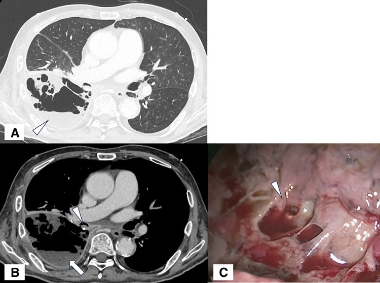
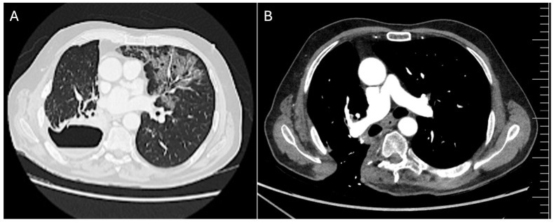
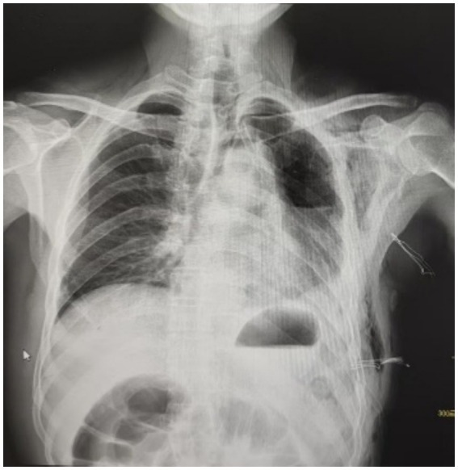
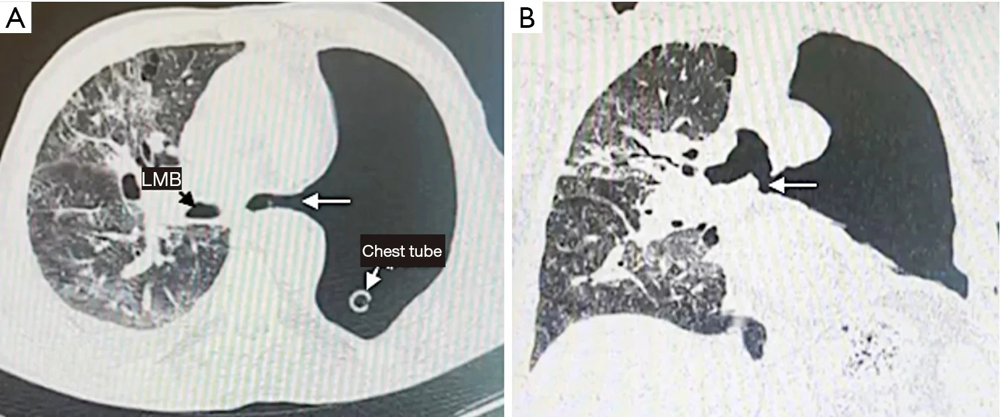
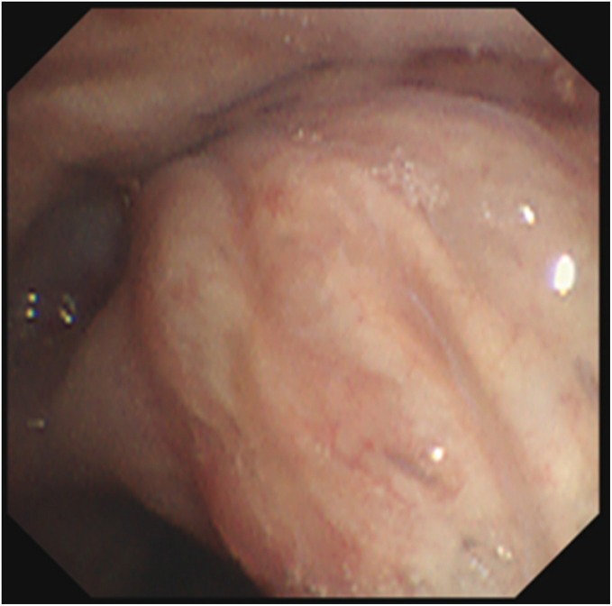

3108 — Vỡ mỏm phế quản sau cắt phổi: rò khí – màng phổi / Bronchial stump dehiscence & bronchopleural fistula
Tags: pattern:ro pattern:ro-khi-manh-phoi pattern:tach-mom-phe-quan pattern:hoai-tu-mom pattern:tran-khi vung:phe-quan vung:mang-phoi vung:phoi protocol:CT-nguc-lat-mong protocol:noi-soi-phe-quan
Mức chắc chắn (certainty): tổng hợp y văn (literature synthesis) — số liệu chính lấy từ đồng thuận chuyên gia 2026 về rò khí – màng phổi sau cắt phổi (29 khuyến cáo, Delphi 46 chuyên gia; PMC13559298), tổng quan chiến lược mổ 2026 (PMC13559394), ca lâm sàng có ảnh CC BY (PMC13301846, PMC12500380, PMC12683161, PMC13190457) và tổng quan về tràn mủ khoang màng phổi sau cắt phổi (PMC13740711, chỉ dùng số liệu). Không có bệnh nhân của nhóm; mọi ngưỡng đều ghi kèm nguồn, chỗ chưa có số liệu ghi "chưa rõ".
Câu chốt: vỡ mỏm phế quản là thất bại của quá trình liền vết khâu, không phải "hở một lỗ trên phim". Ba con số quyết định: (1) tần suất 0,8–12,5% sau cắt toàn bộ phổi (pneumonectomy) nhưng chỉ 0,44–4,0% sau cắt thùy (lobectomy) — và 10,98% ở phổi phải so với 5,32% ở phổi trái (P = 0,026); (2) thời điểm: ≤ 7 ngày = thể sớm (sớm nhất là lỗi kỹ thuật cơ học, phải tính mổ lại), 8–30 ngày = thể trung gian, > 30 ngày = thể muộn (thiếu máu – nhiễm – xơ); (3) ≥ 5 mm là ngưỡng đổi chiến lược — dưới 5 mm có thể bít bằng keo/dụng cụ nhỏ, từ 5 mm phải tính dụng cụ bít lớn/đặt stent, > 10 mm hoặc tách rộng thì gần như phải mổ.
1. Tổng quan bệnh học – cơ chế hình ảnh: TẠI SAO mỏm phế quản vỡ
1.1 Mỏm phế quản liền nhờ gì — và vì sao nó dễ vỡ
- Giải phẫu: mỏm phế quản là đoạn sụn – niêm mạc không có mạch máu nuôi trực tiếp tại chỗ. Sụn phế quản không có mao mạch; niêm mạc sống nhờ đám rối dưới niêm mạc và các nhánh động mạch phế quản nhỏ đi theo vỏ phế quản. Khi phẫu tích rốn phổi, các nhánh này bị cắt hoặc huyết khối hóa, nên mỏm khâu chỉ sống nhờ dòng thấm từ mô trung thất xung quanh trong 7–10 ngày đầu — đúng giai đoạn vết khâu yếu nhất.
- Trình tự mô bệnh: thiếu máu → hoại tử niêm mạc/sụn → bung chỉ/đứt đường khâu → rò khí → khoang màng phổi nhiễm mủ. Vì thế thể sớm (≤ 7 ngày) hầu như luôn là thất bại cơ học (chỉ bị tuột, mỏm quá ngắn, mô kẹp vào stapler), còn thể muộn (> 30 ngày) là thiếu máu tiến triển + nhiễm trùng khoang màng phổi + xơ hóa (PMC13559394).
- TẠI SAO phổi phải nguy hiểm hơn: phế quản gốc phải ngắn (< 15 mm ở người lớn), không có phủ trung thất như bên trái (bên trái được động mạch chủ và thực quản che phủ), và mô quanh phế quản thưa → mỏm khâu ít được nuôi dưỡng và dễ bị "trần trụi" trong khoang màng phổi. Đây là lý do 10,98% vs 5,32% ở loạt 455 ca cắt toàn bộ phổi (P = 0,026; PMC13559394).
- TẠI SAO cắt toàn bộ phổi nguy hiểm hơn cắt thùy: mỏm lớn hơn, khoang màng phổi rỗng lớn tồn tại nhiều tháng, áp lực trong khoang và nhiễm khuẩn tác động trực tiếp lên mỏm, và không còn nhu mô phổi che phủ. Tần suất 0,8–12,5% so với 0,44–4,0% (PMC13559394).
1.2 Vật lý hình ảnh: vì sao CT thấy được — và vì sao CT hay bỏ sót
- Khí = −1.000 HU, dịch màng phổi = 0–20 HU (dịch nhiễm có thể 20–40 HU do protein/tế bào), mỡ −40 đến −120 HU. Mức khí – dịch là mặt phẳng ngang vì khí nhẹ hơn dịch — trên CT axial, mặt phẳng này luôn song song với mặt đất, không phụ thuộc tư thế bệnh nhân.
- Đường rò là một dải khí mỏng chạy từ lòng phế quản ra khoang màng phổi; muốn thấy phải lát mỏng ≤ 1–1,25 mm và đúng mặt phẳng chứa đường rò (thường chéo, nên CT axial đơn thuần bỏ sót). Vì thế đồng thuận 2026 yêu cầu CT lát mỏng/HRCT cho mọi ca nghi ngờ, kèm tái tạo coronal/sagittal (PMC13559298).
- Dấu hiệu gián tiếp mạnh hơn dấu hiệu trực tiếp: sau cắt toàn bộ phổi, khoang màng phổi bình thường có mức khí – dịch rồi dịch dâng dần trong nhiều tuần. Vì vậy dấu hiệu gợi ý là mức dịch TỤT xuống hoặc khí TĂNG lên sau giai đoạn ổn định, khí – dịch đổi mức sau khi ho (dấu lâm sàng "air-fluid change after cough" trong đồng thuận), khí mới quanh mỏm trung thất, và đông đặc/aspiration ở phổi đối diện (PMC13559298; PMC13740711).
- TẠI SAO có hơi trong mô mềm trung thất: khí thoát từ mỏm đi theo vỏ phế quản vào trung thất (hiệu ứng Macklin) → tràn khí trung thất, tràn khí dưới da; đây là dấu lan theo giải phẫu, không phải "khí tự do" ngẫu nhiên.
1.3 Dịch tễ và kết cục (số liệu để quyết định độ hung hăng)
- Tần suất: cắt toàn bộ phổi 0,8–12,5%; cắt thùy 0,44–4,0%; bung đường khâu (staple-line dehiscence) 1,5–3% (PMC13559394; PMC13190457).
- Đoàn hệ 4.794 ca cắt phổi giải phẫu liên tiếp: 32 ca rò (0,67%); yếu tố dự báo độc lập: nam, cắt thùy dưới phải, cắt hai thùy giữa – dưới phải, cắt toàn bộ phổi phải (PMC13559394).
- Tử vong: trong đoàn hệ 514 ca cắt toàn bộ phổi, tử vong 30 ngày 4,3% toàn nhóm, và rò khí – màng phổi làm tăng nguy cơ tử vong độc lập, HR = 5,128; ở các loạt rò sau cắt thùy, tử vong 14–18,2% (PMC13559394). Một đoàn hệ 2026 sau cắt thùy ghi tử vong 90 ngày 29,2% khi chỉ điều trị bảo tồn so với 10,5% khi can thiệp nội soi/mổ — nhưng đây là so sánh hồi cứu, không chứng minh nhân quả (chọn bệnh nhân nặng vào nhóm bảo tồn).
- Chỉ số dinh dưỡng là yếu tố tiên lượng: đồng thuận đặt ngưỡng can thiệp dinh dưỡng khi NRS 2002 ≥ 3, sụt cân > 10%, BMI < 18,5 kg/m², hoặc albumin < 30 g/L; dữ liệu đa trung tâm 81 ca rò sau mổ xác định hạ albumin và thiếu máu tại thời điểm rò là yếu tố dự báo độc lập của thất bại điều trị (PMC13559298; PMC13559394).
- Yếu tố nguy cơ khác: đái tháo đường, COPD, hút thuốc, tuổi cao, corticoid kéo dài, xạ trị ngực trước mổ, di chứng ung thư tại mỏm, thông khí cơ học sau mổ, mỏm quá dài/thiếu mạch, suy dinh dưỡng (PMC13559394).
2. Mẫu hình + chẩn đoán phân biệt theo vị trí và thời gian (gamut)
2.1 Theo giải phẫu: trung tâm hay ngoại vi — câu hỏi đầu tiên
- Rò trung tâm (central BPF): thất bại liền mỏm phế quản hoặc miệng nối sau cắt phổi giải phẫu; nhìn thấy trực tiếp bằng nội soi phế quản; thường lớn, có mủ khoang màng phổi, và là thể nguy hiểm nhất (nguy cơ sặc mủ sang phổi đối diện, ho ra máu do ăn mòn mạch lớn).
- Rò ngoại vi (peripheral BPF / alveolopleural fistula): sau cắt không giải phẫu (wedge/segment) hoặc tổn thương nhu mô; thường không thấy được bằng nội soi, chẩn đoán bằng rò khí kéo dài + bằng chứng màng phổi; cần định vị bằng bóng chẹn từng phân thùy (segmental balloon occlusion), xanh methylene bơm qua ống dẫn lưu, hoặc Chartis/digital drainage (PMC13559298).
- Rò ống ngực – màng phổi / rò thực quản – màng phổi: không phải rò khí; dịch dưỡng chấp (triglyceride > 110 mg/dL) hoặc dịch tiêu hóa/pH thấp, không có đường khí từ phế quản. Phân biệt bằng tính chất dịch, không bằng hình ảnh.

CT ngực sau cắt thùy dưới phải (A: cửa sổ phổi; B: cửa sổ trung thất): xẹp phổi + tràn dịch màng phổi, và đường rò từ mỏm phế quản vào khoang màng phổi. Nguồn: Surg Case Rep 2025 (PMC12500380), CC BY 4.0.2.2 Theo thời gian: mốc thời gian đổi cả nguyên nhân lẫn cách xử trí
- Sớm ≤ 7 ngày: thất bại cơ học của đường khâu (tuột chỉ, mỏm ngắn, stapler bắn lệch, mô kẹp). Biểu hiện đột ngột: khó thở, tràn khí – dịch cấp, ho ra nước, sốc nếu căng thẳng. Đồng thuận khuyến cáo bàn mổ sớm song song với nội soi, không chờ (PMC13559298).
- Trung gian 8–30 ngày: hoại tử thiếu máu tiến triển + nhiễm khoang màng phổi; thường biểu hiện sốt, mủ qua ống dẫn lưu, mức dịch tụt.
- Muộn > 30 ngày: mỏm xơ – nhiễm mạn – di chứng ung thư, thường kèm tràn mủ mạn (empyema); điều trị chủ yếu là kiểm soát nhiễm + dẫn lưu + đóng mỏm có vạt cơ, hoặc mở cửa sổ lồng ngực (open-window thoracostomy) rồi đóng thì hai (Clagett cải tiến).
2.3 Gamut chẩn đoán phân biệt (cái gì còn lại nếu KHÔNG phải rò)
| Bệnh cảnh | Vì sao dễ nhầm | Điểm khác cốt lõi |
|---|---|---|
| Nhiễm khoang màng phổi đơn thuần (không rò) | Cùng sốt, mủ, dịch tăng | Không có khí mới trong khoang kín, không có đường rò; nội soi mỏm nguyên vẹn |
| Tràn khí màng phổi do dò khí nhu mô (air leak) | Cùng rò khí kéo dài | Rò từ nhu mô, không có khuyết mỏm; khí ít, không mủ, không tụt mức dịch |
| Hẹp miệng nối phế quản (bài 023) | Cùng khó thở, cùng tiền sử ghép phổi | Hẹp lòng, không có khí trong khoang màng phổi; CT thì thở ra mới lộ |
| Rò thực quản – màng phổi | Cùng tràn dịch – khí, cùng sốt | Dịch có pH thấp/thức ăn, không có đường khí từ phế quản; nội soi thực quản chốt |
| Áp-xe phổi hoại tử vỡ vào màng phổi | Cùng mức khí – dịch | Hang trong nhu mô + mức khí – dịch trong hang, không phải trong khoang màng phổi tự do |
| Rò phế quản – màng phổi do u ăn mòn | Cùng rò khí | Khối u/hoại tử trung tâm, không có tiền sử cắt phổi; nội soi thấy u |
3. Bảng so sánh phân biệt (ma trận đối chiếu)
| Thực thể | Hình ảnh điển hình (CT lát mỏng) | Chốt vào (rule-in) | Chốt loại (rule-out) | Gợi ý xác nhận |
|---|---|---|---|---|
| Rò trung tâm sớm ≤ 7 ngày | Khuyết mỏm phế quản + khí trong khoang + mức khí – dịch mới; trung thất khí | Khuyết thành phế quản thấy trên ≥ 2 mặt phẳng + thay đổi mức khí – dịch sau ho | Mỏm liền, không khí mới → không phải rò sớm | Nội soi phế quản ≤ 24 giờ; mổ sớm nếu tách rộng |
| Rò trung tâm muộn > 30 ngày | Mỏm co rúm, xơ, mất liên tục, khoang màng phổi dày thành, vôi hóa, mủ | Mủ qua ống dẫn lưu + khuyết mỏm + khoang màng phổi mạn | Khoang sạch, không khí, không mủ → không rò | Nội soi + cấy mủ; CT có cản quang đánh giá vạt cơ |
| Rò ngoại vi / air leak kéo dài | Không thấy khuyết mỏm; khí quanh vùng khâu nhu mô, ít dịch | Rò khí > 5 ngày, giảm dần, không mủ, không tụt mức dịch | Có khuyết mỏm + mức dịch tụt → rò trung tâm | Bóng chẹn phân thùy; Chartis; xanh methylene |
| Nhiễm khoang màng phổi không rò | Dịch vách hóa, khí trong ổ kín (vi khuẩn sinh hơi), không đường rò | Cấy mủ dương tính, mỏm nguyên vẹn | Khí di chuyển theo tư thế + đường rò → rò thật | Nội soi mỏm; theo dõi mức dịch |
| Rò thực quản – màng phổi | Tràn dịch – khí bên trái, trung thất khí, không khuyết mỏm | Dịch pH < 6 hoặc có thức ăn, nội soi thực quản thấy lỗ | Đường khí từ phế quản → rò phế quản | Nội soi tiêu hóa; nuốt cản quang |
| Hẹp miệng nối phế quản (bài 023) | Giảm > 50% diện tích lòng tại miệng nối, không khí màng phổi | Hẹp tại miệng nối + không rò khí | Khuyết thành + khí khoang → rò | Nội soi + CT 2 thì hít vào – thở ra |

CT ngực sau cắt thùy trên bệnh nhân ung thư biểu mô tuyến: mức khí – dịch trong khoang màng phổi phải + tổn thương nhiễm trùng phổi đối diện. Ảnh nguyên bản, không crop. Nguồn: J Clin Med 2026 (PMC13301846), CC BY 4.0.4. Protocol chụp + phân tầng và ngưỡng xử trí
4.1 Protocol hình ảnh và xác nhận
- X-quang ngực tại giường: dấu hiệu mức dịch tụt, khí tăng, tràn khí – dịch mới, khí trung thất. Nhạy thấp, không loại trừ — dùng để theo dõi hàng ngày ở bệnh nhân có ống dẫn lưu.
- CT ngực lát mỏng ≤ 1–1,25 mm, không cản quang là đủ để tìm khuyết mỏm + đường rò + mức khí – dịch; cản quang tĩnh mạch khi cần đánh giá mủ vách hóa, vạt cơ, mạch lớn bị ăn mòn. Tái tạo coronal + sagittal và MIP dọc phế quản.
- Nội soi phế quản (bronchoscopy) = tiêu chuẩn vàng: thấy khuyết mỏm, chỉ khâu lộ, mủ từ lòng phế quản, đánh giá kích thước lỗ (mm). Đồng thuận 2026 chia nhìn thấy (visible) vs ẩn (occult) ngay lần soi đầu — quyết định toàn bộ chiến lược.

X-quang ngực lần nhập viện thứ hai sau cắt thùy trên trái: xẹp 40% phổi trái, tràn khí + tràn dịch màng phổi. X-quang chỉ gợi ý — chẩn đoán vẫn cần CT lát mỏng + nội soi. Nguồn: Front Med 2026 (PMC13190457), CC BY 4.0.- Định vị khi ẩn/ngoại vi: bơm xanh methylene pha loãng qua ống dẫn lưu dưới nội soi; chẹn bóng từng phân thùy xem rò khí giảm; Chartis/digital drainage; thoracoscopy khi cần (PMC13559298).
4.2 Ba trục phân loại và ngưỡng (đồng thuận 2026)
- Trục 1 — vị trí: trung tâm (mỏm/miệng nối, soi thấy) vs ngoại vi (nhu mô, thường ẩn).
- Trục 2 — kích thước tối đa: nhỏ < 5 mm** vs **lớn ≥ 5 mm**; **> 10 mm hoặc tách rộng là vùng không thể bít bằng keo, phải stent có màng hoặc mổ.
- Trục 3 — thời gian: sớm ≤ 7 ngày, trung gian 8–30 ngày, muộn > 30 ngày.
flowchart TD
A[Hoặc nghi rò khí màng phổi sau cắt phổi] --> B[CT lát mỏng 1 mm + X-quang]
B --> C[Nội soi phế quản trong 24 giờ]
C --> D{Thấy khuyết mỏm?}
D -->|Có| E{Đường kính tối đa}
D -->|Không| F[Rò ẩn hoặc ngoại vi: xanh methylene, chẹn bóng, Chartis]
E -->|Dưới 5 mm| G[Keo sinh học, dụng cụ nhỏ, chờ lành]
E -->|5 đến 10 mm| H[Dụng cụ bít lớn hoặc stent có màng]
E -->|Trên 10 mm hoặc tách rộng| I[Mổ đóng mỏm có vạt cơ]
F --> J[Kiểm soát dẫn lưu, nhiễm, dinh dưỡng trước]
G --> J
H --> J
J --> K{Không cải thiện sau 1 tuần hoặc xấu đi?}
K -->|Có| L[Nâng bậc: nội soi lần 2, stent, hoặc mổ]
K -->|Không| M[Theo dõi 2 đến 4 tuần, 3 tháng]
4.3 Ngưỡng thất bại của điều trị bảo tồn (khi nào phải đổi chiến lược)
Đồng thuận 2026 định nghĩa bảo tồn thất bại khi có một trong các điều kiện (PMC13559298):
- Rò khí kéo dài ≥ 1 tuần không có xu hướng giảm rõ rệt dù đã dẫn lưu đủ và điều trị chuẩn.
- Hình ảnh sau ~1 tuần: khoang màng phổi không nhỏ đi, to lên, hoặc vách hóa.
- Dịch dẫn lưu vẫn mủ, sốt kéo dài, CRP/BC không giảm, cấy còn dương tính.
- Bất kỳ dấu hiệu nhiễm khuẩn huyết/suy hô hấp → nâng bậc ngay, không chờ mốc thời gian.
4.4 Điều trị theo tầng (kèm kết quả định lượng)
- Bước 0 — luôn làm trước khi đóng: dẫn lưu khoang màng phổi đủ, kiểm soát nhiễm (cấy mủ + kháng sinh theo kháng sinh đồ, xem lại sau 48–72 giờ), nuôi dưỡng (ngưỡng như mục 1.3), hỗ trợ hô hấp.
- Rò nhỏ < 5 mm: keo fibrin/dung dịch bít, dụng cụ nhỏ, hoặc chờ lành. Tỷ lệ thành công bít qua nội soi 73,1–90% ở nhóm chọn lọc (PMC13559394).
- Rò ≥ 5 mm, trung tâm: dụng cụ bít (Amplatzer) hoặc stent có màng. Meta-phân tích van nội phế quản một chiều (endobronchial valve) cho rò khí dai dẳng: thành công gộp 82%, biến chứng 9,1% (PMC13559298). Loạt 83 dụng cụ Amplatzer ở 72 bệnh nhân: không tử vong/thủ thuật, 8,4% phải tháo dụng cụ trong 6 tháng, nhưng tử vong liên quan rò 15,3% trong nhóm nguy cơ cao (PMC13559394). Stent có màng ở mỏm cắt toàn bộ phổi: đóng kín ngay, tháo stent sau 71–123 ngày (PMC13559394).
- Rò > 10 mm, tách rộng, hoại tử bờ, nhiễm không kiểm soát: mổ đóng mỏm ± vạt cơ có cuống (cơ liên sườn, cơ ngực, mỡ màng tim, mạc treo lớn). Đóng mỏm thì đầu thành công 59% (23/39) trong loạt hiện đại, mổ trung vị 28 ngày sau mổ đầu; cắt toàn bộ phổi bổ sung sau cắt thùy có tử vong 8,3% (30 ngày) và 16,6% (90 ngày) (PMC13559394).
- Rò muộn + tràn mủ mạn: mở cửa sổ lồng ngực (open-window thoracostomy) → kiểm soát nhiễm → đóng thì hai kiểu Clagett với vạt cơ. Loạt Clagett cải tiến 84 bệnh nhân (55 có rò): tử vong mổ 7,1%, 81% lành thành ngực không tái nhiễm; loạt 47 ca dùng vách cơ + bít khoang: 93,6% khỏi (PMC13559394).
- Dự phòng: che phủ mỏm có chọn lọc (vạt cơ liên sườn/mỡ màng tim) cho cắt toàn bộ phổi phải, xạ trị tân hỗ trợ, di chứng u tại mỏm, đái tháo đường; meta-phân tích cho thấy nhóm được che phủ 6,3% so với nhóm không che phủ 4,0% — nhưng đây là thiên lệch chọn bệnh nhân (nhóm nguy cơ cao mới được che phủ), không phải bằng chứng che phủ có hại (PMC13559394).
5. Biến thể bình thường và cạm bẫy
- Mức khí – dịch sau cắt toàn bộ phổi là BÌNH THƯỜNG trong những tuần đầu: khoang chứa khí rồi dịch dâng dần. Vì thế không đọc "có mức khí – dịch" là rò — phải so chuỗi phim và tìm mức dịch tụt/khí tăng sau giai đoạn ổn định.
- Khí trong khoang màng phổi 1–3 ngày đầu sau mổ là tàn lưu bình thường; khí mới xuất hiện sau ngày 5–7 mới đáng lo.
- Stapler gây giả ảnh kim loại che mất mỏm trên CT: dùng lát mỏng + tái tạo đa mặt phẳng, hoặc nội soi thay vì cố đọc trên axial.
- Satisfaction of search: thấy tràn dịch/đông đặc phổi đối diện rồi dừng lại — đây có thể là hậu quả của sặc mủ từ rò, không phải "viêm phổi mới"; luôn quay lại mỏm phế quản.
- Rò khí qua ống dẫn lưu bị bịt kín (ống gập, bịt đầu) làm mất dấu rò khí — kiểm tra ống trước khi kết luận "đã lành".
- Bong vảy fibrin/niêm mạc trên mỏm trông như "khuyết mỏm" khi soi — cần đánh giá kích thước thật và bơm khí/nghiệm pháp trước khi can thiệp.
- Đừng nhầm "ho ra chỉ khâu" với rò thật: bệnh nhân có thể khạc ra vật liệu khâu khi đường khâu bung, nhưng rò khí chỉ xác định bằng nội soi/khí khoang màng phổi.
6. Tự lượng giá — Blind Quiz
Ca 1 — Nam 65 tuổi, cắt thùy trên phổi phải vì ung thư 12 ngày trước, nay sốt 38,8°C, khó thở, dịch dẫn lưu đục và ít hơn hẳn hôm qua. Nhìn CT trước, mô tả trước khi mở đáp án.
- Gợi ý lâm sàng: sau cắt thùy, sốt + dịch mủ + lượng dịch tụt.
- Câu hỏi: (1) Dấu hiệu chính trên CT? (2) Ba chẩn đoán phân biệt? (3) Dấu hiệu nào chốt chẩn đoán?
Bấm để hiện đáp án (findings + chẩn đoán)
- Dấu hiệu: mức khí – dịch trong khoang màng phổi phải + đông đặc/nốt viêm phổi ở phổi đối diện (dấu sặc mủ). Khoang màng phổi không còn "đầy dịch" như trước → mức dịch tụt.
- Chẩn đoán: rò khí – màng phổi trung tâm sau cắt thùy — dịch tụt vì dịch thoát qua đường rò vào phế quản, đồng thời mủ tràn sang phổi đối diện gây đông đặc.
- Chốt: nội soi phế quản thấy khuyết mỏm; đo đường kính lỗ (mm) để chọn tầng điều trị.
- Phản biện: ảnh này từ ca rò muộn sau cắt thùy có nhiễm Aspergillus (PMC13301846) — không điển hình cho rò sớm do lỗi kỹ thuật, nhưng hình thái khoang – mức khí dịch – tổn thương đối diện giống nhau; nguyên nhân nhiễm nấm là chi tiết của ca, không phải quy luật.
- Nguồn: J Clin Med 2026 (PMC13301846), CC BY 4.0.
Ca 2 — Bệnh nhân cắt toàn bộ phổi trái 9 ngày trước, đau ngực, tràn khí dưới da. CT có 2 mặt phẳng dưới đây.

- Gợi ý: tràn khí dưới da sau cắt toàn bộ phổi = khí đi theo vỏ phế quản vào trung thất.
- Câu hỏi: (1) Vị trí khuyết? (2) Vì sao đây là thể "sớm" và nguy hiểm? (3) Hai lựa chọn điều trị đầu tay?
Bấm để hiện đáp án (findings + chẩn đoán)
- Dấu hiệu: khuyết/thành mỏm phế quản gốc trái với đường rò nối mỏm vào khoang màng phổi (mũi tên), thấy rõ trên cả axial và coronal; kèm thâm nhiễm viêm phổi đối diện.
- Chẩn đoán: tách mỏm phế quản gốc trái ngày thứ 9 — thể trung gian (8–30 ngày), cơ chế thiếu máu/hoại tử mỏm hơn là lỗi kỹ thuật thuần túy.
- Vì sao nguy hiểm: mỏm gốc lớn + khoang màng phổi rộng → sặc mủ sang phổi đối diện, suy hô hấp, nguy cơ ăn mòn mạch lớn; tử vong trong loạt rò sau cắt toàn bộ phổi tăng HR 5,128.
- Điều trị: dẫn lưu + kháng sinh + dinh dưỡng, rồi bít bằng stent có màng/dụng cụ hoặc mổ đóng mỏm có vạt cơ; nếu tách rộng/hoại tử bờ → mổ sớm.
- Nguồn: J Thorac Dis 2026 (PMC13559394), CC BY-NC-ND 4.0 — ảnh nguyên bản, không crop, không ghép.
Ca 3 — Bệnh nhân cắt thùy trên trái, rò khí kéo dài 3 tuần, không sốt, dịch trong. Nội soi phế quản 60 ngày sau mổ:

Bấm để hiện đáp án
- Dấu hiệu: niêm mạc mỏm hồng, không hoại tử, lỗ rò gần như đã đóng; không còn rò khí.
- Chẩn đoán: rò khí – màng phổi tự đóng — có thể gặp dù tách toàn bộ mỏm, nhưng hiếm; điều trị chủ yếu là dẫn lưu + dinh dưỡng + kiên nhẫn.
- Bài học: không phải mọi rò đều phải mổ: rò nhỏ, bệnh nhân ổn định, không nhiễm → theo dõi có mốc thời gian (đồng thuận: đánh giá lại sau 2–4 tuần).
- Nguồn: Surg Case Rep 2025 (PMC12683161), CC BY 4.0.
Bài liên quan chéo
- 001 – Tổng quan hệ Ngực
- 023 – Hẹp miệng nối phế quản sau ghép phổi
- 040 – Tràn dịch màng phổi (tràn mủ, vách hóa)
- 049 – Theo dõi sau cắt thùy phổi bẩm sinh ở trẻ
- 086 – Rò động mạch chủ – phế quản (ho ra máu, ăn mòn mạch lớn)
- 098 – Barotrauma & tràn khí màng phổi áp lực
- 3083 – Chấn thương khí phế quản do lực tù (rò khí sau chấn thương, không do mổ)
Không dùng để chẩn đoán độc lập khi chưa có người hướng dẫn.